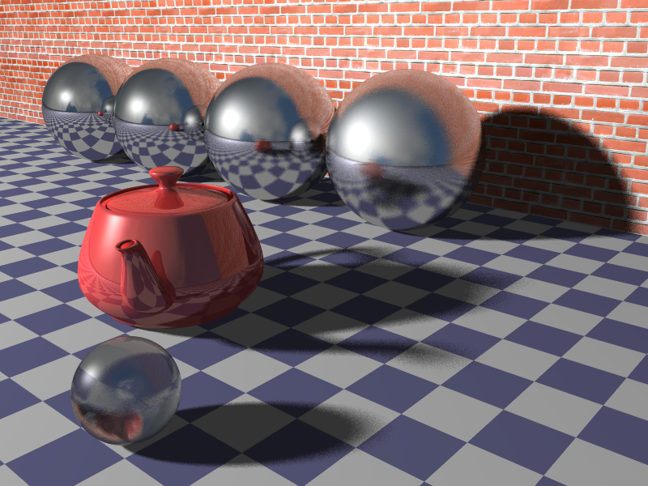
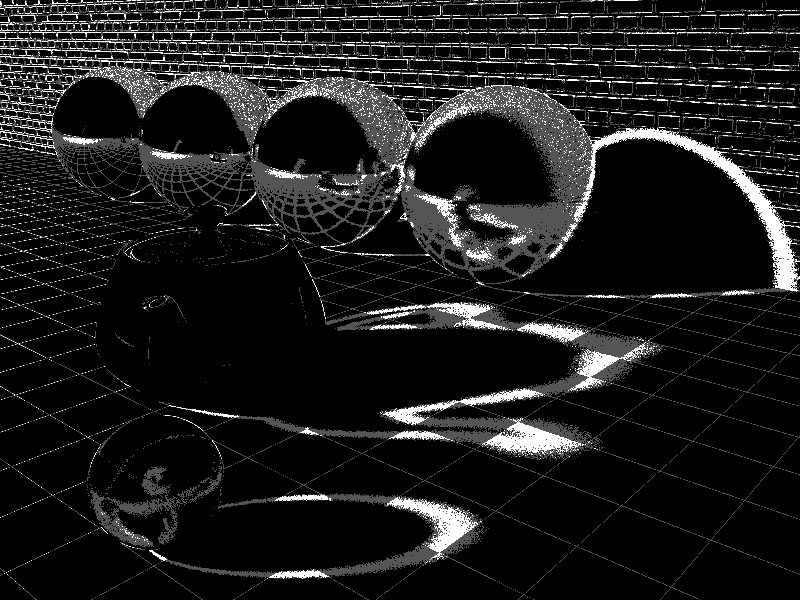
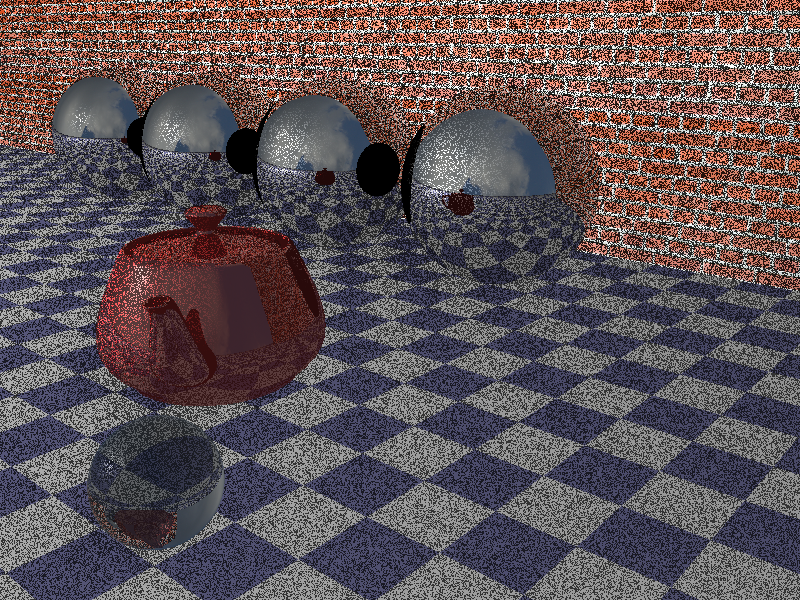

CS6620 - Ray Tracing for Graphics
Project 10 - Glossy Materials and Soft Shadows.
Results
Rendered in 0:20:10 with eight threads and four bounces.


Machine Specs
Running Windows 10 on a Bootcamped MacBook Pro
| Processor |
Intel Core i7 2.50 GHz |
| RAM |
16GB 1600 MHz DDR3 |
| Graphics Card |
Intel Iris Pro 1536 MB |
Project Stumbling Blocks
After implementing soft shadows, I was getting a bunch of dark specs everywhere.

I noticed that instead of calculating the direction to the new light position I was calculating the direction
from the old light position to the new light position.